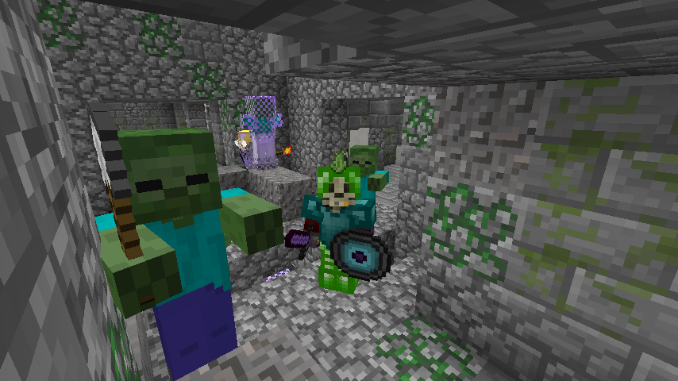

Yolo-ninja is a modpack designed for large-scale building projects and general use. It's been designed to make things a bit easier (such as simpler recipes for OpenComputers components) but also more interesting (like rare, but rewarding, ore veins), adding mods you don't see too often.And maids are included.
Extra Information
We plan on having a small wiki with 'vital information' and helpful links later.
The main repository holds all of the configuration files and tweaks, so you can see exactly what we're doing to the pack.
The current pack authors are Cerdra (@cerdra), and Gyro (@NotGyro).
Credits go to Bedaufadaunk et al for contributing.
And Github suggested the name.
Any suggestions, comments, or questions?
Send it to cerdra@gmail.com with an appropriate subject line.